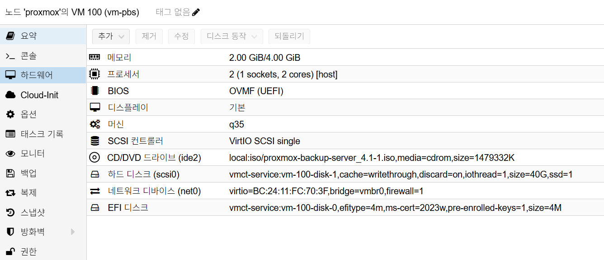

Proxmox Backup Server Installation
개요
이 문서는 Proxmox VE 환경에서 Proxmox Backup Server(PBS)를 별도 VM으로 설치하고, 초기 접속 및 기본 관리 설정까지 수행하는 절차를 정리합니다.
아키텍처와 버전 기준
- 권장 구조:
Proxmox VM(PBS) - 권장 배치:
PBS는Kubernetes밖(독립 VM)에서 운영 - 버전 기준:
Proxmox VE 9.x환경은PBS 4.x사용
네이밍 및 DNS 기준
- 내부 전용 이름보다 실제 관리 중인 도메인 우선
- 이 환경에서는
*.internal.semtl.synology.me체계를 사용 - PBS short hostname 권장:
vm-pbs - PBS 권장 FQDN:
pbs.internal.semtl.synology.me - PBS 관리 IP 예시:
192.168.0.253 - Synology DNS Server IP 예시:
192.168.0.2 - Gateway 예시:
192.168.0.1
참고:
- 설치 자체는 짧은 이름(
vm-pbs)만으로도 진행될 수 있습니다. - 다만 내부 DNS, 인증서, 메일 알림, 자기 자신에 대한 이름 해석까지 고려하면 PBS에는 FQDN을 맞추는 편이 안정적입니다.
- 운영 정합성은
hostname은 short hostname,hostname -f는 FQDN이 되도록 맞추는 구성을 우선 권장합니다. .local은 mDNS 충돌 여지가 있으므로 기본 선택지로 두지 않습니다.
사전 조건
- Proxmox VE에서 PBS용 VM 생성 권한
- PBS ISO 이미지 다운로드 (
https://www.proxmox.com/en/downloads) - Synology 측 DNS 사전 준비 (시놀로지 설치 가이드 참고)
- PBS 고정 IP 및 FQDN 계획
예시 PBS IP:
192.168.0.253
예시 FQDN:
pbs.internal.semtl.synology.me
사전 준비 상세: 시놀로지 설치 가이드
1) PBS VM 생성 (Proxmox)
Proxmox Web UI에서 Create VM을 실행합니다.
Proxmox VM H/W 참고 이미지
아래 이미지는 Proxmox Hardware 탭 기준의 PBS VM 구성 예시입니다.

캡션: 2 vCPU, 2GB ~ 4GB RAM, q35, OVMF (UEFI), OS Disk 40GB, vmbr0
General
VM ID: 예)100Name: 예)vm-pbs
OS
ISO Image:proxmox-backup-server_4.x-x.isoGuest OS:Linux
System
Machine:q35BIOS:OVMF (UEFI)또는 기본값SCSI Controller:VirtIO SCSI single
Disk (OS 디스크)
Bus/Device:SCSIDisk size:40GBCache:writethroughDiscard:onSSD emulation:onIO thread:on
CPU / Memory
- 기본 권장:
2 vCPU,2GB RAM - 리소스 여유 시:
4 vCPU,8GB RAM까지 확장
Network
Bridge:vmbr0Model:VirtIO
2) PBS ISO 설치
VM 콘솔에서 부팅 후 설치를 진행합니다.
- 부트 메뉴에서
Install Proxmox Backup Server (Graphical)선택 - 디스크 선택 화면에서 PBS OS 디스크(
/dev/sda) 선택 Location / Timezone / Keyboard설정root비밀번호 및email설정- 네트워크 설정
- 설치 완료 후 재부팅
권장 Locale:
Asia/Seoul, U.S. English
예시 네트워크 설정:
Management Interface:nic0 - bc:24:11:fc:70:3f (virtio_net)Hostname:pbs.internal.semtl.synology.meIP:192.168.0.253CIDR:24Gateway:192.168.0.1DNS:192.168.0.2
입력 원칙:
Hostname은 설치 단계부터 FQDN으로 맞추는 것을 권장- 설치 화면상 NIC 이름은
nic0처럼 보일 수 있으며, OS 내부 이름은 설치 후ens18등으로 다르게 표시될 수 있음 DNS는 공유기보다 Synology DNS를 직접 지정- 짧은 이름을 별칭으로 계속 쓰고 싶다면 설치 후
/etc/hosts에서vm-pbs같은 alias를 추가
3) Web UI에서 APT 리포지토리 설정
초기 설치 직후에는 PBS Web UI에서 Enterprise 리포지토리 상태를 먼저 확인하고,
구독이 없는 환경이면 pbs-no-subscription 리포지토리를 사용하도록 맞춥니다.
Web UI 경로:
관리리포지토리pbs-enterprise항목 선택비활성화추가->No-Subscription선택
확인 기준:
pbs-enterprise가 비활성화 상태http://download.proxmox.com/debian/pbs저장소가 활성화 상태- 컴포넌트가
pbs-no-subscription으로 표시됨
CLI로 함께 확인하려면 아래 파일을 점검합니다.
cat /etc/apt/sources.list.d/pbs-enterprise.sources
cat /etc/apt/sources.list.d/proxmox.sources
운영 메모:
- 구독이 없는 홈랩/테스트 환경에서는
pbs-no-subscription구성이 일반적입니다. - 운영 환경에서 Enterprise 구독을 사용 중이면 이 단계를 건너뛰고
pbs-enterprise를 유지합니다.
4) 설치 후 초기 업데이트
PBS에 SSH 접속 후 업데이트를 수행합니다.
apt update
apt dist-upgrade -y
5) qemu-guest-agent 설치 및 활성화
Proxmox VM에서 IP 조회, shutdown 연동, 상태 확인을 안정적으로 사용하려면
게스트 OS 안에 qemu-guest-agent를 설치합니다.
apt install -y qemu-guest-agent
systemctl enable --now qemu-guest-agent
systemctl status qemu-guest-agent
Proxmox Web UI에서도 VM 옵션을 함께 확인합니다.
- PBS VM 선택
옵션QEMU Guest Agent항목 확인- 필요 시
활성화(Enabled)로 변경
확인 기준:
- VM 내부에서
qemu-guest-agent서비스가active (running) - Proxmox Web UI에서
QEMU Guest Agent가 활성화 상태
6) 운영자 계정 및 sudo 초기 설정
기본 root 계정만 계속 사용하는 대신 운영자 계정을 추가하고 sudo 권한을
부여하는 구성을 권장합니다.
6-1. sudo 설치
PBS 최소 설치 환경에서는 sudo가 기본 설치되어 있지 않을 수 있으므로 먼저
패키지를 확인하고 설치합니다.
apt update
apt install -y sudo
6-2. semtl 계정 생성 및 sudo 권한 부여
adduser semtl
usermod -aG sudo semtl
id semtl
groups semtl
확인 기준:
semtl계정이 생성됨sudo그룹에semtl이 포함됨
필요 시 실제 전환 테스트:
su - semtl
sudo whoami
정상 결과는 root입니다.
6-3. root 비밀번호 변경
초기 설치 시 설정한 root 비밀번호를 재설정하려면 아래 명령을 사용합니다.
passwd root
운영 권장:
root와 일반 운영자 계정의 비밀번호를 동일하게 사용하지 않음- 가능하면
semtl계정으로sudo를 사용하고root직접 로그인은 최소화 - 비밀번호 변경 후 SSH 세션과 Web UI 로그인 모두 재확인
6-4. SSH를 semtl 전용으로 제한
root 비밀번호 변경이 끝나면 SSH는 semtl 계정만 허용하도록 제한합니다.
이 저장소 기준 PBS SSH 운영 원칙은 아래와 같습니다.
- SSH 접속은
semtl계정으로만 허용 root는 SSH 직접 접속 금지- 필요 작업은
semtl로그인 후sudo로 수행
실행 권한:
- 아래 명령은
root쉘에서 실행하거나semtl계정으로 로그인한 뒤sudo를 붙여 실행합니다.
설정 파일 생성:
install -d -m 0755 /etc/ssh/sshd_config.d
cat <<'EOF' > /etc/ssh/sshd_config.d/90-semtl-access.conf
PermitRootLogin no
PasswordAuthentication yes
PubkeyAuthentication yes
AllowUsers semtl
EOF
파일명 규칙 메모:
sshd_config.d아래*.conf파일은 보통 이름순으로 읽습니다.- 그래서
00-,10-,50-,90-처럼 앞에 숫자를 붙여 적용 순서를 관리합니다. 90-semtl-access.conf는 기본 설정 뒤에서 운영 정책을 덮어쓰는 용도로 사용합니다.
설정 검증 및 적용:
sshd -t
systemctl restart ssh
systemctl status ssh --no-pager
접속 검증:
ssh semtl@192.168.0.253
ssh root@192.168.0.253
기대 결과:
ssh semtl@192.168.0.253접속 성공ssh root@192.168.0.253접속 실패- PBS Web UI 로그인은 계속 사용 가능
추가 권장:
- SSH 키를 사용할 경우
su - semtl후~/.ssh/authorized_keys를 구성 - 키 전환이 끝나면
PasswordAuthentication no를 추가로 검토 - 평소 OS 작업은
semtl로 수행하고root는 비상용으로만 유지
7) 설치 후 hostname/DNS 확인 및 보정
7-1. hostname 수정
현재 설치 기준으로 hostname 실행 시 pbs가 나올 수 있으므로,
운영 기준 short hostname인 vm-pbs로 hostnamectl을 사용해 변경합니다.
hostnamectl set-hostname vm-pbs
pbs를 vm-pbs로 변경하려면 아래 2가지를 함께 수정합니다.
hostnamectl: 시스템의 실제 hostname 변경/etc/hosts: FQDN과 short hostname 매핑 정리
/etc/hosts 예시:
127.0.0.1 localhost
192.168.0.253 pbs.internal.semtl.synology.me vm-pbs
먼저 현재 설정이 의도한 값과 일치하는지 확인합니다.
hostname
hostname -f
hostnamectl status
cat /etc/hosts
cat /etc/resolv.conf
수정 후 정상 예시:
hostname:vm-pbshostname -f:pbs.internal.semtl.synology.me/etc/hosts:192.168.0.253 pbs.internal.semtl.synology.me vm-pbs/etc/resolv.conf:nameserver 192.168.0.2
운영 메모:
pbs.internal.semtl.synology.me는 공식 FQDNvm-pbs는 short hostnamehostname은vm-pbs,hostname -f는pbs.internal.semtl.synology.me가 되도록 유지
7-2. DNS 수정
설치 중 DNS를 공유기(192.168.0.1)로 넣었다면 PBS에서 직접 보정합니다.
/etc/network/interfaces 예시:
iface <NIC> inet static
address 192.168.0.253/24
gateway 192.168.0.1
dns-nameservers 192.168.0.2 1.1.1.1
즉시 반영 전 임시 확인이 필요하면 /etc/resolv.conf도 함께 점검합니다.
nameserver 192.168.0.2
nameserver 1.1.1.1
적용 후 검증:
hostname
hostname -f
nslookup pbs.internal.semtl.synology.me
nslookup google.com
ping -c 3 google.com
권장 기준:
- PBS와 주요 VM은 내부 도메인을 안정적으로 해석하기 위해 Synology DNS를 직접 바라보도록 설정
- 공유기를 DNS로 둘 수는 있어도, 내부 Zone을 Synology가 관리하는 환경에서는 직접 지정이 더 단순하고 예측 가능
- DNS/hostname 운영 기준 상세: DNS/Hostname 가이드
8) PBS 로컬 사용자 ACL 추가
PBS 로컬 사용자에 관리자 권한을 부여할 때는 --userid가 아니라
--auth-id를 사용합니다.
admin@pbs 계정을 생성하고 Admin 권한을 부여하는 예시는
아래와 같습니다.
# admin@pbs 계정이 있을경우 삭제
# proxmox-backup-manager user remove admin@pbs
proxmox-backup-manager user create admin@pbs --password 'StrongPassword123!'
proxmox-backup-manager acl update / Admin --auth-id admin@pbs
확인 명령:
proxmox-backup-manager user list
proxmox-backup-manager acl list
9) PBS Web UI 접속 확인
PBS는 설치 후 브라우저에서 관리합니다.
- URL:
https://pbs.internal.semtl.synology.me:8007 - 또는
https://192.168.0.253:8007 - Username:
admin@pbs - Password:
admin@pbs생성 시 설정한 비밀번호
CLI 점검:
systemctl status proxmox-backup-proxy
ss -tulpen | grep ':8007'
10) 초기 설치 완료 후 스냅샷 생성
기본 설치, 업데이트, 계정 설정, hostname/DNS 보정이 끝났으면 PBS VM의 초기 기준점을 남기기 위해 Proxmox에서 스냅샷을 생성합니다.
스냅샷은 반드시 불필요 파일(찌꺼기) 정리 후 생성합니다.
10-1. 불필요 파일 정리 (semtl 실행)
# /tmp 전체 삭제
sudo rm -rf /tmp/*
# /var/tmp 전체 삭제
sudo rm -rf /var/tmp/*
# 미사용 패키지 정리
sudo apt autoremove -y
# APT 캐시 정리
sudo apt clean
# journal 로그 전체 정리
sudo journalctl --vacuum-time=1s
# root / semtl bash 히스토리 비우기
su -
cat /dev/null > /root/.bash_history && history -c
exit
cat /dev/null > /home/semtl/.bash_history && history -c
권장 시점:
admin@pbs계정 생성 및 Web UI 접속 확인 완료 후sudo설치 및semtl계정 생성 완료 후6-4. SSH를 semtl 전용으로 제한적용 및 접속 확인 완료 후hostname,/etc/hosts, DNS 보정 완료 후- Datastore 연결 및 실제 백업 작업 생성 전
Proxmox Web UI 절차:
- PBS VM 선택
스냅샷스냅샷 생성- 이름과 설명 입력 후 생성
권장 예시:
Name:BASELINEDescription예시:
- PBS 4.x 초기 설치 완료
- pbs-enterprise 비활성화 및 no-subscription 추가
- 시스템 업데이트 완료
- qemu-guest-agent 설치 및 활성화
- sudo 설치
- semtl 계정 생성 및 sudo 권한 부여
- root 비밀번호 변경
- ssh를 semtl 전용으로 제한 적용 및 접속 확인 완료
- hostname vm-pbs로 변경
- /etc/hosts 및 DNS 설정 보정
- admin@pbs 계정 생성 및 Admin ACL 부여
- Web UI 접속 확인 완료
운영 메모:
- 이 스냅샷은 초기 문제 발생 시 되돌아가기 위한 기준점으로 사용합니다.
- 실제 백업 데이터가 쌓이기 시작한 뒤에는 장기 보관용으로 스냅샷을 남발하지 않고, 변경 작업 직전에만 짧게 사용하는 편이 좋습니다.
- PBS를 운영 중인 상태에서 오래된 스냅샷을 유지하면 스토리지 사용량이 커질 수 있습니다.
참고
- Proxmox 다운로드:
https://www.proxmox.com/en/downloads - 시놀로지 설치 가이드
- Proxmox 운영 가이드
- PBS 연동/백업/문제 해결은 PBS 운영 가이드 참고